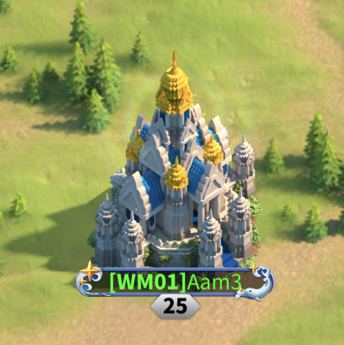
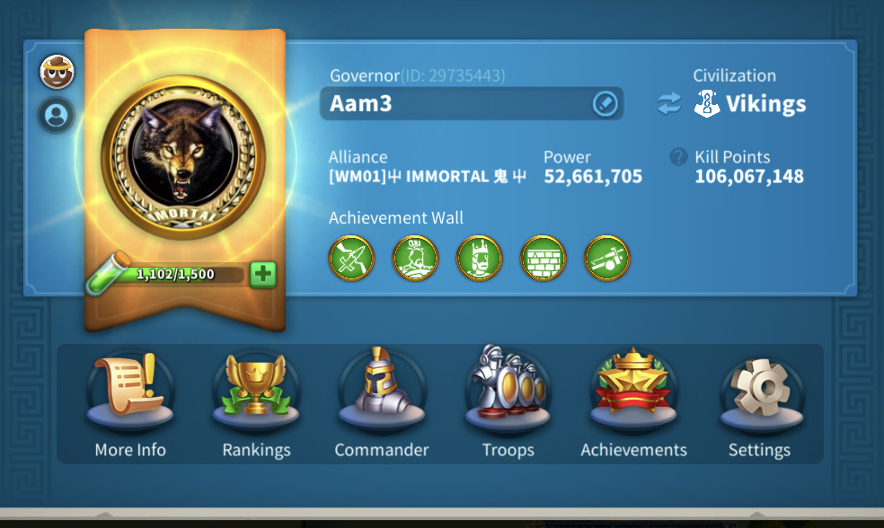

My Account
Aam3

This is my account

How to upgade your city
I have worked on my account for the past 3 years as a free to play player , many people when they first start off don't really understand the the strategy on how to upgrade thie cities .so i'm going to give you a quick rundown on the best way to upgrade your city .

What's inside
There are many buildings inside your city,a watchtower and the city wall that need upgraded to level

City Hall-The City Hall is the central building in the city, it determines the maximum level of all structures.
Castle - This building allows you have launch rallies on barbarains ,other cities , flags that build other allainces territory and passes to travel into other areas of the kingdon .You will need members from your allaince to help you with your raliies .Ralling barbarain forts gives you books of covenant which you require to upgrade the Castel.THIS IS THE BUILDING YOU NEED TO FOCUS ON as it will direct you around the best stratagy when upgrading your city.
Watchtower-The Watchtower is the second defense building in your city, along with the Wall. Upgrading the watchtower adds extra protection to the city by means of increased damage to attackers and absorbing damage to the stationed garrison. Defeating barbarains you will get Arrows of resistance wich you will need to upgrade the watchtower
The wall-The Wall is the main defense building in the city,the higher the level of your wall the more durable it is against the enemy.
Acadamey-The Academy is a building which allows you to research technologies which will increase the research speed bonus for the city.
Alliance Center-The Alliance Center is the main building for to Help and get Help from your alliance members. When you press the Alliance Help button, your alliance members.
Scout Camp-Scout March Speed Bonus Exploration Range Number of Scouts
Barracks-The Barracks is a building which allows for the training and upgrade of infantry units
Archery Range - The Archery Range is a building that allows for the training and upgrade of archer units.
Stable-The Stable is a building that allows for the training and upgrade of cavalry units.
Siege Workshop-The Siege Workshop is a building that allows for the training and upgrade of siege units.
Blacksmith- The blacksmith can be used to forge equipment for your troops
4 Farms-This produces corn you need for healing troops and upgrading buildings
4 Lumber Mills-his produces wood you need for healing troops and upgrading buildings
4 Quaries-his produces stone you need for healing troops and upgrading buildings
Goldmines -this produces gold you need for healing troops and upgrading buildings
4 Hospitals-The Hospital is a building that allows for the treatment of severely wounded troops, allowing them to rejoin armies
Storehouse-This is where you resourses are strored
Tavern-This give you chests you open what provides rewards
Trading Post-
The Trading Post is a building which allows you to donate certain resources with your alliance members.
Shop- This provides you with items such as speedups,action points,teleports,VIP points and much more
Courier Station-The Courier Station is a building which is home to the Mysterious Merchant. The Mysterious Merchant will visit your city periodically and an icon of a gipsy will appear over this building when she has discounted items you can purchase with resourses or gems
My own personal view of Rise of Kingdoms
I have been playing the game for 3 years and in thses 3 years.I have created an alliance -NBD1- all the players there have grown to know each other and formed a bond , we have as a team have worked together helping each other upgrade our accounts ,gone into civil wars,fought in many K.V.K's. we have migrated to differnt kingdoms as a group of players but still stayed together.
we are a "ROK FAMILY"
to be apart of a group of players from all walks of life,from all over the world we have for the past 3 years stuck together. I have found that no matter the distance friendships remain.